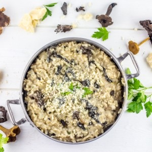
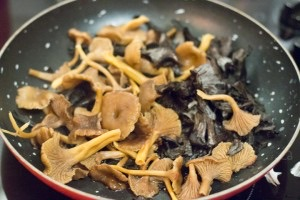
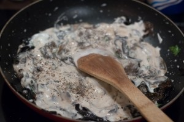
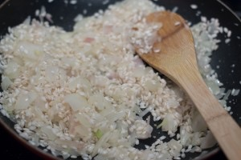
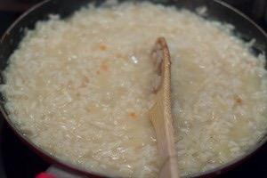
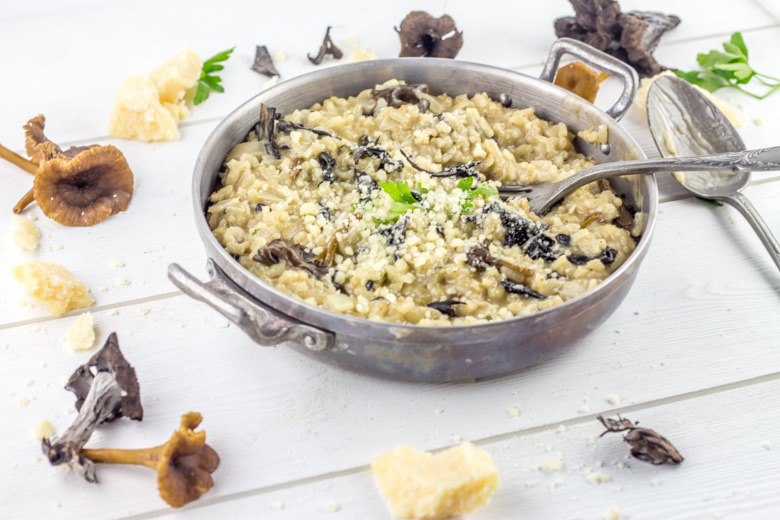
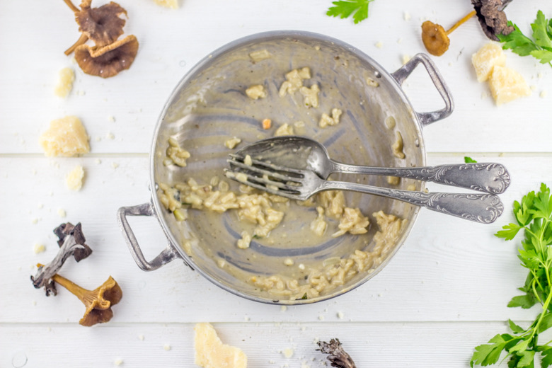

Risotto ai funghi

Après ma recette de gnocchis j’avais envie de rester encore un peu en Italie avec cette recette de risotto aux champignons.
Un risotto aux champignons c’est un peu le plat par excellence à cette saison de l’année! Je pense que chaque personne qui est passée par chez moi a déjà mangé de mon risotto ai funghi terriblement parfumé! Ce plat est ce que j’appelle une valeur sûre (à moins de ne pas aimer les champignons!) car il fait très souvent l’unanimité. Cette année c’est mon tout premier mais à force de voir toutes ces trompettes de la mort un peu partout je n’ai pu résister. Vous pouvez varier les champignons selon la saison et en fonction de ceux que vous utiliserez, le parfum du risotto sera lui aussi différent. Pour celui ci en plus des trompettes de la mort j’ai ajouté des chanterelles grises (je vous laisse imaginer la délicieuse odeur émanant de la cuisine…)
Originaire d’Italie, le risotto est souvent préparé en France à partir de riz arborio, riche en amidon. Sa cuisson lente va permettre à l’amidon d’être relâcher progressivement, ce qui confère au plat une texture très crémeuse. Je ne sais pas vous mais j’ai plutôt l’habitude de servir le risotto en plat principal! Pourtant, en Italie il est servi en tant que premier plat équivalent à une entrée^^ (j’imagine pas le plat qui vient en suivant!!). Hormis sa cuisson longue, le risotto est un plat rapide et simple à préparer, alors ceux qui hésitent encore pensant que c’est compliqué n’hésitez plus 😉
Je vous laisse découvrir la recette!
Ingrédients
- Champignons (trompette de la mort et chanterelles pour moi) - 300g
- Riz arborio - 250g
- Bouillon de légumes - 1litre
- Echalotes - 2
- Ail - 2 gousses
- Vin blanc - 20cl + 3càs
- Crème fraiche - 10cl
- Parmesan - 180g
- Beurre - 20g
- Persil
Instructions
- Nettoyer vos champignons délicatement et couper les gros champignons en morceaux si nécessaire
- Hacher les gousses d'ail et mettez les dans une poêle avec un peu d'huile d'olive
- Ajouter les champignons et le persil
- Faire revenir pendant 5 bonnes minutes
- Saler
- Ajouter 3 cuillères à soupe de vin blanc et laisser cuire jusqu'à réduction
- Après réduction, ajouter la crème fraîche et remuer
- Saler, poivrer et réserver
- Dans une grande poêle, faire blondir les échalotes avec le beurre
- Ajouter le riz et remuer jusqu'à ce qu'il devienne translucide à feu moyen
- Déglacer avec les 20cl de vin blanc en deux fois
- Une fois le vin absorbé, ajouter deux louches de bouillon de légumes
- Cuire en remuant jusqu'à ce que le bouillon soit absorbé et renouveler l'opération jusqu'à épuisement total du bouillon
- Pendant ce temps, râper le parmesan
- En fin de cuisson, ajouter la moitié du parmesan et les champignons
- Attendre 2min, couvrir et remuer
- Servir très chaud avec le reste du parmesan






Les tips de la communauté
Très bon accueil avec des commentaires élogieux sur le rendu final. Les lecteurs apprécient la simplicité de la recette et les belles photos malgré quelques questions sur les ingrédients.
Astuces
- Le vin blanc est incontournable dans un risotto aux champignons
- La recette est simple mais très savoureuse
- En Italie, le riz ou les pâtes se servent en entrée en petites quantités
Variantes suggérées
- Ajouter différents types de champignons selon la saison
- Expérimenter avec diverses garnitures pour modifier le goût
Ajustements signalés
- L'alcool du vin blanc s'évapore complètement pendant la cuisson